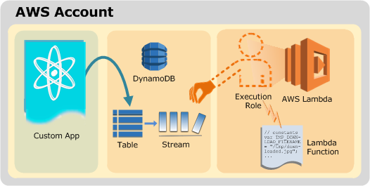
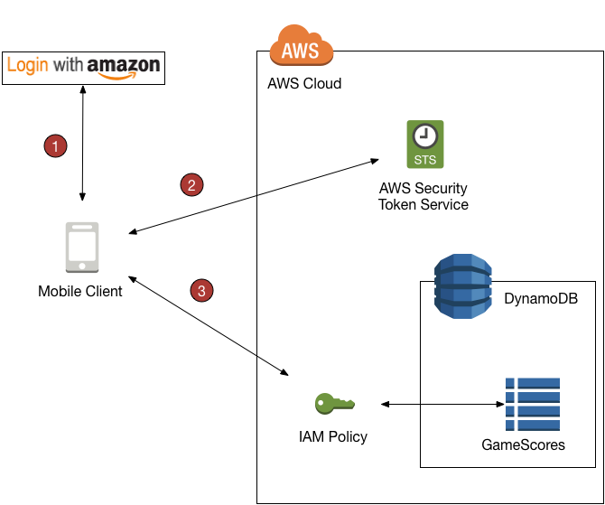
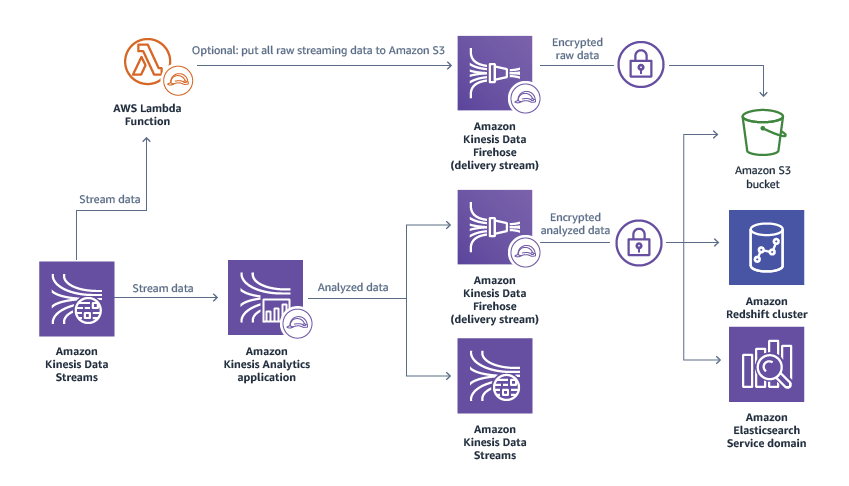
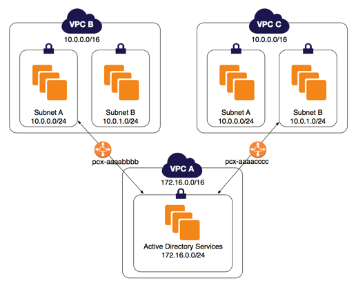

Test Report
Review questions
Jun 17, 2019 12:17AM EDT
 41 incorrect
41 incorrectYour answer
B. Create a product catalogue on an EC2 instance; use 3rd party tools to allow end users to deploy approved products themselves.
C. Use AWS Config. Give end users appropriate IAM access to Config to allow them to deploy approved products themselves.
D. Use AWS Service Catalog. Give end users appropriate IAM access to Service Catalog to allow them to deploy approved products themselves.
Correct answer is D as AWS Service Catalog allows you to control what users can deploy, while providing the users the ability to deploy themselves reducing the time and money is being spent on deploying software for end users
Refer AWS documentation - AWS Service Catalog
AWS Service Catalog allows organizations to create and manage catalogs of IT services that are approved for use on AWS. These IT services can include everything from virtual machine images, servers, software, and databases to complete multi-tier application architectures. AWS Service Catalog allows you to centrally manage commonly deployed IT services, and helps you achieve consistent governance and meet your compliance requirements, while enabling users to quickly deploy only the approved IT services they need.
AWS Service Catalog provides a single location where organizations can centrally manage catalogs of IT services. With AWS Service Catalog you can control which IT services and versions are available, the configuration of the available services, and permission access by individual, group, department, or cost center.
With AWS Service Catalog, you define your own catalog of AWS services and AWS Marketplace software, and make them available for your organization. Then, end users can quickly discover and deploy IT services using a self-service portal.
Options A & B are wrong as product catalogue cannot be created on an EC2 instance.
Options A & C are wrong AWS Config is a service that enables you to assess, audit, and evaluate the configurations of your AWS resources. It would not enable create Product Catalog.
AWS SAP-C01 Question feedbackYour answer
B. Utilize Amazon Kinesis to collect the inbound sensor data, analyze the data with Kinesis clients and save the results to a Redshift cluster using EMR.
C. Utilize SQS to collect the inbound sensor data analyze the data from SQS with Amazon Kinesis and save the results to a Microsoft SQL Server RDS instance.
D. Utilize EMR to collect the inbound sensor data, analyze the data from EMR with Amazon Kinesis and save the results to DynamoDB.
Key point here to architect durable collection platform with real time analytics, data mining storage.
Correct answer is B to use Kinesis to capture the data in a elastic, durable and parallel manner. Analyze data with Kinesis clients and store data to Redshift for data mining using EMR.
Option A is wrong as S3 would not be ideal to capture data with that frequency and daily job will not provide real time analytics
Option C is wrong as SQS is not an ideal solution to capture this data and Kinesis clients are required to analyze the data. SQL server might not be a scalable option
Option D is wrong as EMR alone is not ideal to capture data and would need specific frameworks like Kafka to capture data for processing. Also real time analytics needs to done using Spark Streaming and not EMR alone. DynamoDB is not for data mining.
Your answer
B. Your load balancer use TCP health checks to provide application-level health checks.
C. The cooldown period of the Auto Scaling group is too short, so the instances don't have enough time to recover from an issue.
D. Your Auto Scaling group health check type is set to "EC2" to check that the instances themselves are healthy.
Correct answer is A as the autoscaling would have been configured for both the EC2 and ELB health checks. Load balancers would have be configured to check on an http status health check, which refers to the database schema. Because of the change in schema the health check might have failed causing autoscaling to makr the instances as unhealthy and terminate them.
Refer Auto Scaling Termination article & Autoscale ELB Health Check
Load Balancer (ELB) Health Check Failure - If you have created a load balancer health check, your instances must generate an HTTP 200 response within the timeout period specified for the health check. If the timeout period elaspes without generating an HTTP 200 response, the load balancer is designated as unhealthy, and Auto Scaling terminates the instance
Answer B is wrong as its an web application you would need HTTP health checks.
Answer C is wrong as there has been no scale up activity.
Answer D is wrong as the question does not mention anything of the actual instances being unhealthy.
AWS SAP-C01 Question feedbackPoints : 5 out of 5
Your answer
B. Segregate the instances into different peered VPCs while keeping them all in a placement group, so each one has its own Internet Gateway.
C. Bake an AMI for the instances and relaunch, so the instances are fresh in the placement group and do not have noisy neighbors
D. Turn off SYN/ACK on your TCP stack or begin using UDP for higher throughput.
Correct answer is A as Jumbo frames allow more than 1500 bytes of data by increasing the payload size per packet, and thus increasing the percentage of the packet that is not packet overhead. Fewer packets are needed to send the same amount of usable data.
For instances that are collocated inside a placement group, jumbo frames help to achieve the maximum network throughput possible, and they are recommended in this case. For more information, see Placement Groups.
Refer AWS documentation - Jumbo Frames
Option B is wrong as for VPC peering the maximum MTU is still 1500
However, outside of a given AWS region (EC2-Classic), a single VPC, or a VPC peering connection, you will experience a maximum path of 1500 MTU. VPN connections and traffic sent over an Internet gateway are limited to 1500 MTU
Option C is wrong as baking an AMI would only result is faster boot time for the application, it does not improve network performance.
Points : 5 out of 5
Your answer
B. Turn on Cloud Trail and use trail log tiles on S3 as input of the Elastic Map Reduce job
C. Change your log collection process to use Cloud Watch ELB metrics as input of the Elastic Map Reduce job
D. Use Elastic Beanstalk "Rebuild Environment" option to update log delivery to the Elastic Map Reduce job.
E. Use Elastic Beanstalk 'Restart App server(s)" option to update log delivery to the Elastic Map Reduce job.
Key point here is with CloudFront caching the request there are fewer requests served by the ELB and hence the drop.
Correct answer is A as the traffic is now served by CloudFront you can deliver the CloudFront access logs which would have all the access information and have EMR analyze the same
Refer AWS documentation for CloudFront Access logs
Other options are wrong as they would not receive the request they cannot provide the info.
AWS SAP-C01 Question feedbackPoints : 5 out of 5
Your answer
B. Make a new Cluster Placement Group and launch the new instances in the new group. Make sure the Placement Groups are in the same subnet.
C. Request a capacity increase from AWS as you are initially limited to 10 instances per Cluster Placement Group.
D. Make sure all the instances are the same size and then try the launch again.
Correct answer is A as the capacity error would be cause of AWS inability to launch the instance and the option would be to stopping and starting the servers so that they are launched on a hardware which has the capacity for all the requested instances.
Refer AWS documentation - EC2 Placement Group
A cluster placement group is a logical grouping of instances within a single Availability Zone. A placement group can span peered VPCs in the same Region. The chief benefit of a cluster placement group, in addition to a 10 Gbps flow limit, is the non-blocking, non-oversubscribed, fully bi-sectional nature of the connectivity. In other words, all nodes within the placement group can talk to all other nodes within the placement group at the full line rate of 10 Gbps flows and 25 aggregate without any slowing due to over-subscription.
Cluster placement groups are recommended for applications that benefit from low network latency, high network throughput, or both, and if the majority of the network traffic is between the instances in the group. To provide the lowest latency and the highest packet-per-second network performance for your placement group, choose an instance type that supports enhanced networking. For more information, see Enhanced Networking.
We recommend that you launch the number of instances that you need in the placement group in a single launch request and that you use the same instance type for all instances in the placement group. If you try to add more instances to the placement group later, or if you try to launch more than one instance type in the placement group, you increase your chances of getting an insufficient capacity error.
If you stop an instance in a placement group and then start it again, it still runs in the placement group. However, the start fails if there isn't enough capacity for the instance.
If you receive a capacity error when launching an instance in a placement group that already has running instances, stop and start all of the instances in the placement group, and try the launch again. Restarting the instances may migrate them to hardware that has capacity for all the requested instances.
Points : 5 out of 5
Your answer
B. Configure services such as Elastic Load Balancing and Auto Scaling to automatically scale.
C. Reduce the number of necessary Internet entry points.
D. Separate end user traffic from management traffic.
Correct answer is B as the configure services such as Elastic Load Balancing and Auto Scaling to automatically scale targets the ability to Be Ready to Scale to Absorb the Attack
Strategy to minimize the Attack surface area includes
- reduce the number of necessary Internet entry points,
- don’t expose back end servers,
- eliminate non-critical Internet entry points,
- separate end user traffic from management traffic,
- obfuscate necessary Internet entry points to the level that untrusted end users cannot access them, and
- decouple Internet entry points to minimize the effects of attacks.
Refer AWS DDOS Whitepaper
AWS SAP-C01 Question feedbackYour answer
B. Leave the master node to use on-demand and change the core and task nodes to spot
C. Leave all nodes running on-demand instances, the cluster is already cost optimized.
D. Leave the master and core nodes as on-demand and use spot instances for the task nodes
Correct answer is D as AWS recommends using reserved or on-demand instances for Master and Core nodes. Task nodes can use spot instances to improve performance and reduce cost.
Refer AWS documentation - EMR Plan Instances
The master node controls and directs the cluster. When it terminates, the cluster ends, so you should only launch the master node as a Spot Instance if you are running a cluster where sudden termination is acceptable. This might be the case if you are testing a new application, have a cluster that periodically persists data to an external store such as Amazon S3, or are running a cluster where cost is more important than ensuring the cluster’s completion.
Core nodes process data and store information using HDFS. Terminating a core instance risks data loss. For this reason, you should only run core nodes on Spot Instances when partial HDFS data loss is tolerable.
The task nodes process data but do not hold persistent data in HDFS. If they terminate because the Spot price has risen above your maximum Spot price, no data is lost and the effect on your cluster is minimal.
Option A is wrong as running all on spot instances would result in data loss and cluster availability issues.
Option B is wrong as Core nodes should not be run on spot instances as there is a data loss issue.
Option C is wrong as On-demand nodes for all would not provide the best cost optimization.
Your answer
B. Amazon Simple Queue Service (SQS) for capturing the writes and draining the queue to write to the database.
C. Amazon ElastiCache to store the writes until the writes are committed to the database.
D. Amazon DynamoDB with provisioned write throughput up to the anticipated peak write throughput.
Correct answer is B as SQS can be used to provide the durability with at least once delivery of the message and buffer the writes to DynamoDB.
Option A is wrong as RDS is not ideal solution cause it cannot scale horizontally to handle the writes.
Option C is wrong as ElastiCache is for caching and not ideal for storing the writes.
Option D is wrong as there is large and undetermined amount of traffic the write throughput cannot be provisioned.
Your answer
B. Develop the APP in serverless lambda to use Rekognition API "SearchFaces" to search a Celebrity. The input image can be base64-encoded bytes or an S3 object. After the API has been returned, present the result to clients.
C. Use AWS Rekognition service. Implement the APP in lambda to call Rekognition API "RecognizeCelebrities" to fetch the information required in a JSON format. Process the information in Lambda and return the result to end-users. Use S3 for clients to upload photos.
D. Implement the APP in a M4 large EC2 instances with Auto Scaling and Elastic Load Balancer. Build the application via a CloudFormation template. Use the APP to call Rekognition API "SearchFaces" to get the information. Process the JSON result in the backend service and return the result to the frontend with a CloudFront CDN.
Correct answer is C as using AWS Rekognition would provide an Out of the Box celebrities recognition and using Lambda would provide a scalable and cost efficient application layer.
Refer AWS documentation - Rekognition Celebrities
Amazon Rekognition can recognize thousands of celebrities in a wide range of categories, such as entertainment and media, sports, business, and politics. With Amazon Rekognition, you can recognize celebrities in images and in stored videos. You can also get additional information for recognized celebrities.
The Amazon Rekognition celebrity recognition API is tuned to detect as many celebrities as possible in different settings, cosmetic makeup, and other conditions. Social, media, and entertainment customers can build apps that use celebrity recognition. For example, an entertainment app that identifies celebrity lookalikes or an app that identifies celebrities as part of automated footage tagging. Amazon Rekognition celebrity recognition is designed to be exclusively used in cases where you expect there may be a known celebrity in an image or a video.
Option A is wrong as using EC2 is not cost efficient as compared to Lambda.
Option B is wrong as Rekognition API “RecognizeCelebrities” should be used instead of "SearchFaces".
Option D is wrong as using EC2 with ELB and Auto Scaling would be expensive compared to Lambda. Secondly, “RecognizeCelebrities” API should be used instead of "SearchFaces".
AWS SAP-C01 Question feedbackYour answer
B. Create an IAM role - allocate it to the instance and adjust the application to create signed URL's
C. Create a bucket policy allowing all users to read the images
D. Create a lambda function and enable managed identify federation. Use it to serve images using application cookies.
E. Create a CloudFront distribution and set to private
F. Create an S3 bucket, migrate data and enable static web hosting
E. Create a CloudFront distribution and set to private
F. Create an S3 bucket, migrate data and enable static web hosting
Correct answers are B, E & F
Option F as the data can be migrated to low cost static hosting in S3.
Option E as the CloudFront distribution can be used to secure, expose and cache the data for low latency access
Option B as the application can generate pre-signed urls which can allow direct access to users to download from S3 without the traffic being routed by the EC2 instances.
Refer AWS documentation - CloudFront Serving Private Content
Many companies that distribute content over the internet want to restrict access to documents, business data, media streams, or content that is intended for selected users, for example, users who have paid a fee. To securely serve this private content by using CloudFront, you can do the following:
- Require that your users access your private content by using special CloudFront signed URLs or signed cookies.
- Require that your users access your Amazon S3 content by using CloudFront URLs, not Amazon S3 URLs. Requiring CloudFront URLs isn't necessary, but we recommend it to prevent users from bypassing the restrictions that you specify in signed URLs or signed cookies.
Important - If you use an Amazon S3 bucket configured as a website endpoint, you must set it up with CloudFront as a custom origin and you can't use the origin access identity feature described in this topic. You can restrict access to content on a custom origin by using custom headers.
Option A is wrong as larger instance type does not improve performance much and does not utilize the server capacity. It also increases cost.
Option C is wrong as the images should be secure and not exposed to all or made public.
Option D is wrong as Lambda does not handle authentication and serving images from Lambda is not an ideal solution.
Your answer
B. Implement Elastic Load Balancing with an SSL listener that terminates the back-end connection to the application.
C. Configure an IPsec VPN connection, and provide the users with the configuration details. Create a public subnet in your VPC, and place your application servers in it.
D. Configure an SSL VPN solution in a public subnet of your VPC, then install and configure SSL VPN client software on all user computers. Create a private subnet in your VPC and place your application servers in it.
Key point is keep the application private while minimizing deployment and operational costs
Correct answer is D as VPN will help keep the connection private, is cost effective and can be in private subnet as well
Refer AWS documentation for VPC with VPN
Option A is wrong as Direct Connect would increase cost, does not minimize deployment. Also instances are in public subnet and exposed.
Option B is wrong as it is still exposed to Internet
Option C is wrong as instances still in public subnet are internet accessible
AWS SAP-C01 Question feedbackYour answer
B. As CloudFormation does not support OpsWorks service, use Chef in EC2 to build up the web services. Existing cookbooks can be used. Add an Auto Scaling group with a proper auto scaling configuration to ensure high availability
C. Use a nested CloudFormation template to create an OpsWorks stack. The resource type is “AWS::OpsWorks::Stack”. Add a Java layer in the stack. Make sure that the Scaling configuration is turned on
D. Use various CloudFormation templates to set up infrastructure such as VPC, NAT Gateway, Bastion host, Security Groups and EC2 instances. Version control it using GitHub.
E. Use OpsWorks to build up the Java web services. Existing cookbooks can be used. However OpsWorks cannot be put into CloudFormation template, as CloudFormation does not support it.
C. Use a nested CloudFormation template to create an OpsWorks stack. The resource type is “AWS::OpsWorks::Stack”. Add a Java layer in the stack. Make sure that the Scaling configuration is turned on
Correct answers are A & C
Option A as CloudFormation provides infrastructure as code with templates being version controlled using CodeCommit.
Option C as OpsWorks help reuse Chef cookbooks and recipes and application deployment.
Refer AWS documentation - CloudFormation OpsWorks
AWS CloudFormation enables modeling, provisioning and version-controlling of a wide range of AWS resources. AWS OpsWorks is an application management service that simplifies software configuration, application deployment, scaling, and monitoring.
You can now model OpsWorks components (stacks, layers, instances, and applications) inside CloudFormation templates, and provision them as CloudFormation stacks. This enables you to document, version control, and share your OpsWorks configuration. You have the flexibility to provision OpsWorks components and other related AWS resources such as Amazon VPC and AWS Elastic Load Balancer with a unified CloudFormation template or separate CloudFormation templates.
Options B & E are wrong as CloudFormation can be used with OpsWorks.
Option D is wrong as the EC2 instances management must be performed using OpsWorks stack.
AWS SAP-C01 Question feedbackYour answer
B. Use the CloudFront default certificate in both origin and CloudFront
C. Use 3rd-party CA certificate in the origin and CloudFront default certificate in CloudFront
D. Use 3rd-party CA certificate in both origin and CloudFront
E. Use a self signed certificate in both the origin and CloudFront
D. Use 3rd-party CA certificate in both origin and CloudFront
Correct answer is C & D. Refer AWS documentation for CloudFront HTTPs
For End-to-End HTTPS connections certificate needs to be applied both between the Viewers and CloudFront & CloudFront and Origin, with the following requirements
- HTTPS between viewers and CloudFront
- Certificate that was issued by a trusted certificate authority (CA) such as Comodo, DigiCert, or Symantec;
- Certificate provided by AWS Certificate Manager (ACM);
- Self-signed certificate.
- HTTPS between CloudFront and a custom origin
- If the origin is not an ELB load balancer, the certificate must be issued by a trusted CA such as Comodo, DigiCert, or Symantec.
- For ELB load balancer, certificate provided by ACM can be used
Option A is wrong as Origin cannot be self signed
Option B is wrong as CloudFront cert cannot be applied to origin
Option E is wrong as Origin cannot be self signed
AWS SAP-C01 Question feedbackYour answer
B. Leverage resource based tagging along with an IAM user, which can prevent specific users from terminating production EC2 resources.
C. Leverage EC2 termination protection and multi-factor authentication, which together require users to authenticate before terminating EC2 instances.
D. Create an IAM user and apply an IAM role, which prevents users from terminating production EC2 instances.
Key point here is to identify production resources and be able prevent termination.
Correct answer is B as tagging will help identify production instances and explicitly deny access using resource level permissions
Option A is wrong as EC2 termination protection is enabled on EC2 instance
Option C is wrong as it does not still prevent user from terminating instance
Option D is wrong as Role is not applied to User but assumed by the User also need a way to identify production EC2 instances
AWS SAP-C01 Question feedbackYour answer
B. Create a VPC S3 endpoint
C. Increase the NAT instance size; network throughput increases with an increase in instance size
D. Launch an additional NAT instance in another subnet and replace one of the routes in a subnet to the new instance
Correct answer is B as VPC S3 endpoint would help the instances to connect to S3 without having to route the traffic through NAT and IGW.
Refer AWS documentation - VPC Endpoints
A VPC endpoint enables you to create a private connection between your VPC and another AWS service without requiring access over the Internet, through a NAT device, a VPN connection, or AWS Direct Connect. Endpoints are virtual devices. They are horizontally scaled, redundant, and highly available VPC components that allow communication between instances in your VPC and AWS services without imposing availability risks or bandwidth constraints on your network traffic.
AWS SAP-C01 Question feedbackYour answer
B. You must provision and configure your own SSL certificate in IAM and associate it to your CloudFront distribution.
C. You must provision and configure an ALIAS in Route 53 and associate it to your CloudFront distribution
D. You must create an Origin Access identity(OAI) for CloudFront and grant access to the objects in your S3 bucket where the images are stored.
Correct answer is B as per FAQs a third party certificate can be associated with CloudFront using IAM or ACM
Refer to CloudFront Custom SSL Domains
Yes, you can now provision SSL/TLS certificates and associate them with CloudFront distributions within minutes. Simply provision a certificate using the new AWS Certificate Manager (ACM) and deploy it to your CloudFront distribution with a couple of clicks, and let ACM manage certificate renewals for you. ACM allows you to provision, deploy, and manage the certificate with no additional charges. Note that CloudFront still supports using certificates that you obtained from a third-party certificate authority and uploaded to the IAM certificate store.
Option A is wrong as the certificate needs to be associated with CloudFront.
Option C is wrong as ALIAS is just to configure Route 53 and does not handle the custom domain and custom ssl certificate aspect
Option D is wrong as OAI is mainly to protect S3 contents not being directly accessible.
Your answer
B. The encryption of data at rest and in transit can be enabled when the Amazon EFS file system is created.
C. The encryption of data at rest and in transit can only be enabled when the Amazon EFS file system is mounted in EC2 instance.
D. The encryption of data at rest can be enabled when the Amazon EFS file system is mounted in EC2 instance. The encryption of data in transit is enabled when the EFS file system is created using AWS console or CLI.
Correct answer is A as EFS supports both Encryption at Rest and Transit. Amazon EFS supports two forms of encryption for file systems, encryption of data in transit and encryption at rest. You can enable encryption of data at rest when creating an Amazon EFS file system. You can enable encryption of data in transit when you mount the file system.
Refer AWS documentation - EFS
AWS SAP-C01 Question feedbackPoints : 5 out of 5
Your answer
B. AWS KMS supports two kinds of keys — master keys and data keys. Master keys can be used to directly encrypt and decrypt up to 4 KiB of data and can also be used to protect data keys. The data keys are then used to encrypt the customer data and the master keys are used to decrypt the customer data.
C. AWS KMS supports two kinds of keys — master keys and data keys. Master keys can be used to directly encrypt and decrypt up to 4 KiB of data and can also be used to protect data keys. The master keys are then used to encrypt and decrypt customer data.
D. AWS KMS supports two kinds of keys — master keys and data keys. Master keys can be used to directly encrypt and decrypt up to 4 KiB of data and can also be used to protect data keys. The data keys are then used to encrypt and decrypt customer data.
Correct answer is D as KMS has 2 keys, master and data. Master can be used to encrypt/decrypt data key as well as small data set. While data is used to encrypt/decrypt large data.
Refer AWS documentation - KMS Concepts
The primary resources in AWS KMS are customer master keys (CMKs). CMKs are either customer-managed or AWS-managed. You can use either type of CMK to protect up to 4 kibibytes (KiB) of data directly. Typically you use CMKs to protect data encryption keys (or data keys) which are then used to encrypt or decrypt larger amounts of data outside of the service. CMKs never leave AWS KMS unencrypted, but data keys can. AWS KMS does not store, manage, or track your data keys.
Your answer
B. Use Route 53 latency based-routing to send high priority tasks to the closest transformation instances.
C. Use two SQS queues, one for high priority messages, and the other for default priority. Transformation instances first poll the high priority queue; if there is no message, they poll the default priority queue
D. Use a single SQS queue. Each message contains the priority level. Transformation instances poll high-priority messages first.
Correct answer is C as this can be implemented using SQS Priority Queue Pattern

Your answer
B. Configure an on-premise AD server and enable SAML and identify federation for single sign-on to each AWS account.
C. Create an IAM role with read-only permissions to all AWS services in each AWS account. Create one auditor IAM account and add a permissions policy that allows the auditor to assume the ARN role for each AWS account that has an assigned role.
D. Create a custom identity broker application that allows the auditor to use existing Amazon credentials to Log into the AWS environments.
Correct answer is C as it is best to have a role with correct minimal permissions to be able to access multiple AWS accounts.
Option A is wrong as creating an AM user in each account is an overhead, cumbersome and difficult to maintain
Option B and D are wrong as there is no identity provider, it does not need a identity provider and federation handling
AWS SAP-C01 Question feedbackYour answer
B. Deploy in three AZs, with Auto Scaling minimum set to handle 50% peak load per zone.
C. Deploy in three AZs, with Auto Scaling minimum set to handle 33% peak load per zone.
D. Deploy in two regions using Weighted Round Robin (WRR), with Auto Scaling minimums set for 50% peak load per region.
Correct answer is B as 3 AZs with 50% each, even if one does down and auto scaling is not able to launch any instances, 50% + 50% LB handles all the load
Option C is wrong as it gives 33% each and if one goes down, the rest two will handle 66% load
Choice A & D are wrong as WRR would requires Route 53. The Database also requires Synchronous replication with low latency which would not work. Also, for D 50% would not work any ways.
AWS SAP-C01 Question feedbackYour answer
B. An AWS Storage Gateway for connecting on-premises software applications with cloud-based storage securely, Amazon EC2 for the resource code repository with attached Amazon EBS volumes, Amazon EC2 and Amazon RDS MySQL for the project management system, EIPs for the source code repository and project management system, Amazon Simple Notification Service for a notification initiated build, An Auto Scaling group of Amazon EC2 instances for performing builds and Amazon S3 for the build output.
C. An AWS Storage Gateway for connecting on-premises software applications with cloud-based storage securely, Amazon EC2 for the resource code repository with attached Amazon EBS volumes, Amazon EC2 and Amazon RDS MySQL for the project management system, EIPs for the source code repository and project management system, Amazon SQS for a build queue, An Amazon Elastic Map Reduce (EMR) cluster of Amazon EC2 instances for performing builds and Amazon CloudFront for the build output.
D. A VPC with a VPN Gateway back to their on-premises servers, Amazon EC2 for the source-code repository with attached Amazon EBS volumes, Amazon EC2 and Amazon RDS MySQL for the project management system, EIPs for the source code repository and project management system, SQS for a build queue, An Auto Scaling group of EC2 instances for performing builds and S3 for the build output.
Key point here is implement hybrid architecture with processing on AWS and email and LDAP on-premises
Correct answer is D as VPN gateway is required for secure connectivity between AWS and on-premises. SQS for build queue and Auto Scaling EC2 for parallel builds.
Option A is wrong as Bastion is not for VPN connectivity and only as a jump server to be able to access instances in private subnet. SES should not be used as the Email servers on-premises should be utilized
Option B is wrong as Storage Gateway is for backup and does not provide secure connectivity, still needs VPN. SNS alone cannot handle builds and only for notifications
Option C is wrong as Storage Gateway is for backup and does not provide secure connectivity, still needs VPN. EMR is not ideal for performing builds as it needs normal EC2 instances
AWS SAP-C01 Question feedbackYour answer
B. Launch two Windows Server 2008 R2 instances in us-west-1b and two in us-west-1a. Copy the web files from on premises web server to each Amazon EC2 web server, using Amazon S3 as the repository. Launch a multi -AZ MySQL Amazon RDS instance in us-west-1a. Import the data into Amazon RDS from the latest MySQL backup. Create an elastic load balancer to front your web servers. Use Route 53 and create an alias record pointing to the elastic load balancer.
C. Use AWS VM Import/Export to create an Amazon Elastic Compute Cloud (EC2) Amazon Machine Image (AMI) of the web server. Configure Auto Scaling to launch two web servers in us-west-1a and two in us-west-1b. Launch a Multi-AZ MySQL Amazon Relational Database Service (RDS) instance in us-west-1b. Import the data into Amazon RDS from the latest MySQL backup. Use Amazon Route 53 to create a hosted zone and point an A record to the elastic load balancer.
D. Use AWS VM Import/Export to create an Amazon EC2 AMI of the web server. Configure auto -scaling to launch two web servers in us-west-1a and two in us-west-1b. Launch a multi-AZ MySQL Amazon RDS instance in us-west-1a. Import the data Into Amazon RDS from the latest MySQL backup. Create an elastic load balancer to front your web servers. Use Amazon Route 53 and create an A record pointing to the elastic load balancer.
Key point here is cloud migration to ensure HA and performance
Correct answer is B as EC2 servers can be launched with web files from S3. Multi-AZ RDS and Route 53 with ELB and alias record would provide HA.
Option A is wrong as its an interactive website and its migration so would need modifications to use javascript SDK. Also why ELB.
Option C is wrong as the solution does not create a load balancer and cannot point a A record to ELB
Option D is wrong as for need to create a aliased record from Route 53 to ELB
AWS SAP-C01 Question feedbackYour answer
B. Before writing to DynamoDB, do a pre-write acknowledgment to disk on the application server, removing sensitive information before logging. Periodically rotate these log files into S3.
C. Use a DynamoDB Stream Specification and periodically flush to an EC2 instance store, removing sensitive information before putting the objects. Periodically flush these batches to S3.
D. Before writing to DynamoDB, do a pre-write acknowledgment to disk on the application server, removing sensitive information before logging. Periodically pipe these files into CloudWatch Logs.
Correct answer is A as with once the data is written to DynamoDB it would be pushed to streams and have lambda handling it to push to CloudWatch logs which provides a durable storage
Refer AWS documentation - DynamoDB Streams & Lambda with DynamoDB

A DynamoDB stream is an ordered flow of information about changes to items in an Amazon DynamoDB table. When you enable a stream on a table, DynamoDB captures information about every modification to data items in the table.
Whenever an application creates, updates, or deletes items in the table, DynamoDB Streams writes a stream record with the primary key attribute(s) of the items that were modified. A stream recordcontains information about a data modification to a single item in a DynamoDB table. You can configure the stream so that the stream records capture additional information, such as the "before" and "after" images of modified items.
DynamoDB Streams guarantees the following:
- Each stream record appears exactly once in the stream.
- For each item that is modified in a DynamoDB table, the stream records appear in the same sequence as the actual modifications to the item.
DynamoDB Streams writes stream records in near real time, so that you can build applications that consume these streams and take action based on the contents.
Option A & D are wrong as it is before handling the write, it is susceptible to lose information in case of any failures.
Option C is wrong as using instance store would not guarantee durability and might lead to loss of information.
AWS SAP-C01 Question feedbackPoints : 5 out of 5
Your answer
B. Use a CloudFront CDN and configure 0 TTL and enable URL parameter forwarding to the origin.
C. Create an ElastiCache cluster and use write through caching strategies to quickly update the content when blog posts require it.
D. Use CloudFront CDN and configure a lower TTY using CloudFront invalidation mechanisms to clear the cache when updates are required.
Correct answer is B as CloudFront can help maintain a persistent connection to origin and with TTY set to 0 it still caches the results and check if its modified
Refer AWS documentation - CloudFront Dynamic Content
Persistent TCP Connections – Establishing a TCP connection takes some time because each new connection requires a three-way handshake between the server and the client. Amazon CloudFront makes use of persistent connections to each origin for dynamic content. This obviates the connection setup time that would otherwise slow down each request. Reusing these “long-haul” connections back to the server can eliminate hundreds of milliseconds of connection setup time. The connection from the client to the CloudFront edge location is also kept open whenever possible.
Variable Time-To-Live (TTL) – In many cases, dynamic content is either not cacheable or cacheable for a very short period of time, perhaps just a few seconds. In the past, CloudFront’s minimum TTL was 60 minutes since all content was considered static. The new minimum TTL value is 0 seconds. If you set the TTL for a particular origin to 0, CloudFront will still cache the content from that origin. It will then make a GET request with an If-Modified-Since header, thereby giving the origin a chance to signal that CloudFront can continue to use the cached content if it hasn’t changed at the origin.
Option A & C are wrong as using ElastiCache would result in frequent updates to cache and would not be useful.
Option D is wrong as invalidation can be costly as it is not free.
Your answer
B. Submit each calculation to an Amazon API Gateway. Use AWS Lambda functions to perform the calculations.
C. Submit each calculation to a master Amazon EC2 instance. Configure the EC2 instance to forward the calculations to an appropriate EC2 worker node.
D. Submit each calculation to an ELB Application Load Balancer. Configure the ELB to use path-based routing to forward the request to an appropriate Amazon EC2 worker node.
Correct answer is A as AWS Batch helps running jobs optimally. It can run jobs in parallel, independently in a cost effective manner.
Refer AWS documentation - AWS Batch
AWS Batch is a set of batch management capabilities that enables developers, scientists, and engineers to easily and efficiently run hundreds of thousands of batch computing jobs on AWS. AWS Batch dynamically provisions the optimal quantity and type of compute resources (e.g., CPU or memory optimized instances) based on the volume and specific resource requirements of the batch jobs submitted. With AWS Batch, there is no need to install and manage batch computing software or server clusters, allowing you to instead focus on analyzing results and solving problems. AWS Batch plans, schedules, and executes your batch computing workloads using Amazon EC2 and Spot Instances.
- It can shift the time of job processing to periods when greater or less expensive capacity is available.
- It avoids idling compute resources with frequent manual intervention and supervision.
- It increases efficiency by driving higher utilization of compute resources.
- It enables the prioritization of jobs, aligning resource allocation with business objectives.
AWS Batch handles job execution and compute resource management, allowing you to focus on developing applications or analyzing results instead of setting up and managing infrastructure. If you are considering running or moving batch workloads to AWS, you should consider using AWS Batch.
AWS Batch is optimized for batch computing and applications that scale through the execution of multiple jobs in parallel. Deep learning, genomics analysis, financial risk models, Monte Carlo simulations, animation rendering, media transcoding, image processing, and engineering simulations are all excellent examples of batch computing applications.
Option B is wrong as Lambda is not suitable for long running jobs. Its maximum time allowed currently is 15 mins.
Option C is wrong as EC2 master with nodes is not a scalable cost effective architecture. Single Master would create dependency.
Option D is wrong as ELB and EC2 workers are not ideal for batch kind of jobs.
Points : 5 out of 5
Your answer
B. Write the sensor data directly to a scaleable DynamoDB; create a data pipeline that starts an EMR cluster using data from DynamoDB and sends the data to S3 and Redshift.
C. Write the sensor data to Amazon S3 with a lifecycle policy for Glacier, create an EMR cluster that uses the bucket data and runs it through ETL. It then outputs that data into Redshift data warehouse.
D. Write the sensor data directly to Amazon Kinesis and output the data into Amazon S3 creating a lifecycle policy for Glacier archiving. Also, have a parallel processing application that runs the data through EMR and sends to a Redshift data warehouse.
Correct answer is D as the requirement is real time data ingestion and analytics, the best option is to use Kinesis for storing the real time incoming data. The data can then be moved to S3 and analyzed using EMR and Redshift. Data can then be moved to Glacier for archival.
Refer AWS documentation - Kinesis
Amazon Kinesis is a platform for streaming data on AWS, making it easy to load and analyze streaming data, and also providing the ability for you to build custom streaming data applications for specialized needs.
- Use Amazon Kinesis Streams to collect and process large streams of data records in real time.
- Use Amazon Kinesis Firehose to deliver real-time streaming data to destinations such as Amazon S3 and Amazon Redshift.
- Use Amazon Kinesis Analytics to process and analyze streaming data with standard SQL.
Option A is wrong as Cognito is not suitable for handling real time data
Amazon Cognito lets you easily add user sign-up and sign-in and manage permissions for your mobile and web apps. You can create your own user directory within Amazon Cognito, or you can authenticate users through social identity providers such as Facebook, Twitter, or Amazon; with SAML identity solutions; or by using your own identity system. In addition, Amazon Cognito enables you to save data locally on users' devices, allowing your applications to work even when the devices are offline. You can then synchronize data across users' devices so that their app experience remains consistent regardless of the device they use.
Option B is wrong as DynamoDB is not suitable for streaming data ingestion and handling.
Option C is wrong as S3 is not an ideal solution to handle this huge amount of requests.
AWS SAP-C01 Question feedbackYour answer
B. Add a tag for EBS volumes that Department B has owned. Set up a Data Lifecycle Policy based on the tag. For the EBS volumes owned by two departments, snapshots will not be taken, as there is a schedule conflict between two policies. However other EBS volumes are not affected.
C. Add a tag for EBS volumes that Department B has owned. Set up a Data Lifecycle Policy based on the tag. For the EBS volumes owned by two departments, snapshots will be taken every 12 hours as 12 hours schedule takes priority
D. Add a tag for EBS volumes that Department B has owned except the EBS volumes owned by two departments. Set up a Data Lifecycle Policy based on this tag. For the EBS volumes owned by two departments, snapshots are taken every 12 hours due to the policy of Department A
Correct answer is A as each volume needs to be tagged uniquely for the lifecycle policy to be followed.
Refer AWS documentation - EC2 Snapshot Lifecycle Policy
Amazon DLM uses resource tags to identify the EBS volumes to back up. Tags are customizable metadata that you can assign to your AWS resources (including EBS volumes and snapshots). An Amazon DLM policy (described below) targets a volume for backup using a single unique tag. Multiple tags can be assigned to a volume if you want to run multiple policies on it.
You can create multiple policies to back up an EBS volume, as long as each policy targets a unique tag on the volume. Target tags cannot be reused across policies, even disabled policies. If an EBS volume has two tags, where tag A is the target for policy A to create a snapshot every 12 hours, and tag B is the target for policy B to create a snapshot every 24 hours, Amazon DLM creates snapshots according to the schedules for both policies.
Option B is wrong as there is no schedule conflict for this scenario.
Option C is wrong as there is no priority and both schedules can run in parallel.
Option D is wrong as the EBS volumes owned by two departments can add another tag and be included in the policy for Department B.
AWS SAP-C01 Question feedbackPoints : 5 out of 5
Your answer
B. Use dedicated instances to ensure that each instance has the maximum performance possible.
C. Use an Amazon CloudFront distribution for both static and dynamic content.
D. Use an Elastic Load Balancer with auto scaling groups at the web app and Amazon Relational Database Service (RDS) tiers
E. Add alert Amazon CloudWatch to look for high Network in and CPU utilization.
F. Create processes and capabilities to quickly add and remove rules to the instance OS firewall.
D. Use an Elastic Load Balancer with auto scaling groups at the web app and Amazon Relational Database Service (RDS) tiers
E. Add alert Amazon CloudWatch to look for high Network in and CPU utilization.
Key point here is to understand AWS DDOS Mitigation techniques
Correct answer are C, D & E
Refer to the DDOS mitigation whitepaper (Highly Recommended) which mentions
Minimize the Attack Surface Area Be Ready to Scale and Absorb the Attack Safeguard Exposed Resources Learn Normal Behavior Create a Plan for Attacks
Option C as CloudFront would scale and help absorb the attack. CloudFront also helps setup restrictions on accessibility like geo restrictions.
Option D as ELB with auto scaling would help scale and absorb the attack
Option E as you can learn normal behaviour and use CloudWatch to provide and configure alerts and actions when crossed
Option A is wrong as ENI do not help increase network bandwidth.
Refer AWS ENI documentation
Attaching another network interface to an instance (for example, a NIC teaming configuration) cannot be used as a method to increase or double the network bandwidth to or from the dual-homed instance.
Option B as using dedicated instances is more for compliance and security
Option F is not a recommended approach as well needs to automated and as the attack is more multiple IPs it would not help mitigate.
Your answer
B. Establish a VPN connection from the VPC to the public S3 endpoint.
C. Configure a private virtual interface to connect to the public S3 endpoint via the Direct Connect Connection.
D. Add a BGP route as part of the on-premise router; this will route S3 related traffic to the public S3 endpoint to dedicated AWS region.
Refer to AWS Direct Connect Working With Virtual Interfaces
You can create a private virtual interface to connect to your VPC, or you can create a public virtual interface to connect to AWS services that aren't in a VPC, such as Amazon S3 and Amazon Glacier
Correct answer is A as you would need to set up a Public Virtual Interface for public services like S3.
Option C is wrong as private virtual interface is required to access resources within an VPC.
Option B & D are wrong as they would not help access S3 endpoint.
Points : 5 out of 5
Your answer
B. Increase the RCUs for the DynamoDB table.
C. Increase the WCUs for the DynamoDB table.
D. Use conditional writes when the UpdateItem call saves the incremented count.
Correct answer is D as the application is overwriting the values and hence the count is less as compared to the ELB actual count. Conditional writes help enforce an update only if the underlying value has not changed. The operation can be retried again to reflect the correct value.
Refer AWS documentation - DynamoDB Working with Items
By default, the DynamoDB write operations (PutItem, UpdateItem, DeleteItem) are unconditional: each of these operations will overwrite an existing item that has the specified primary key.
DynamoDB optionally supports conditional writes for these operations. A conditional write will succeed only if the item attributes meet one or more expected conditions. Otherwise, it returns an error. Conditional writes are helpful in many situations. For example, you might want a PutItem operation to succeed only if there is not already an item with the same primary key. Or you could prevent an UpdateItem operation from modifying an item if one of its attributes has a certain value.
Option A is wrong as consistent reads would provide the latest value, however it does not guarantee the underlying value has changed before it is updated.
Options B & C are wrong as RCU and WCU would increase the provisioned capacity to prevent throttling, which is not an issue.
AWS SAP-C01 Question feedbackYour answer
B. Model the environment using CloudFormation. Use an EC2 instance running Apache webserver and an open source search application, stripe multiple standard EBS volumes together to store the JPEGs and search index.
C. Use S3 with standard redundancy to store and serve the scanned files, use CloudSearch for query processing, and use Elastic Beanstalk to host the website across multiple availability zones.
D. Use a single-AZ RDS MySQL instance to store the search index and the JPEG images use an EC2 instance to serve the website and translate user queries into SQL.
E. Use a CloudFront download distribution to serve the JPEGs to the end users and Install the current commercial search product, along with a Java Container for the website on EC2 instances and use Route53 with DNS round-robin.
Key point here is HA, durable and cost efficient architecture
Correct answer is C as S3 storage is cost effective & durable, CloudSearch for Search and Highly available and durable web application using multi AZ Elastic Beanstalk
Option A is wrong as Reusing Commercial search application which is nearing end of life not a good option for cost as well S3 One Zone-IA is not durable
Option B is wrong as storing JPEGs on EBS volumes not cost effective. Single instance for Webserver and open source solution is not HA solution
Option D is wrong as MySQL not an ideal solution to store index and JPEG images for cost and performance. Single AZ does not provide HA
Option E is wrong as Web Application not scalable, whats the source for JPEGs files through CloudFront
Your answer
B. For each regional deployment, use MySQL on EC2 with a master in the region and send hourly EBS snapshots to the HQ region
C. For each regional deployment, use RDS MySQL with a master in the region and send hourly RDS snapshots to the HQ region
D. For each regional deployment, use MySQL on EC2 with a master in the region and use S3 to copy data files hourly to the HQ region
E. Use Direct Connect to connect all regional MySQL deployments to the HQ region and reduce network latency for the batch process
Key point here is to support cross region reports with least time
Correct answer is A as you can create a Cross Region Read replica in the Tokyo HQ for DB in each region and use them to compute reports.
Option B, C & D are wrong as it would take time for data, snapshots to be transferred and restored to perform the batch analysis
Option E is wrong as there Direct Connect would be expensive and take time to setup.
AWS SAP-C01 Question feedbackPoints : 5 out of 5
Your answer
B. Suggest provisioning a Direct Connect connection between the on-premise data center and the AWS region.
C. Suggest using AWS import/export to transfer the TBs of data while synchronizing the new data as it arrives.
D. Suggest leaving the data required for the application on-premise and use a VPN to query the on-premise database data from EC2 when required.
Correct answer is B as Direct Connect can help reduce cost and provide a dedicated, predictable high performance data transfer route between VPC and the on-premise environment.
Option A is wrong as although the VPN connection might keep cost low, but would not be preferred option due to the low speeds and unpredictability.
Option C is wrong as given that the data transferred to AWS is new data every time, Import/Export would not be an ideal option. As import/export is preferred mainly for first time data migration and using VPN/Direct Connect later on.
If you have data you need to migrate into the AWS cloud for the first time, AWS Import/Export Disk is often much faster than transferring that data via the Internet.
Option D is wrong as with the VPN the performance would be very poor.
Your answer
B. The names of the Amazon DynamoDB tables must be different in every target region.
C. Use the built-in function of AWS CloudFormation to set the Availability Zone attribute of the ELB resource.
D. Avoid using DeletionPolicies for EBS snapshots.
E. Use the built-in Mappings and FindInMap functions of AWS CloudFormation to refer to the AMI ID set in the ImageId attribute of the Auto Scaling::LaunchConfiguration resource.
E. Use the built-in Mappings and FindInMap functions of AWS CloudFormation to refer to the AMI ID set in the ImageId attribute of the Auto Scaling::LaunchConfiguration resource.
Correct answer is C & E as An ELB may be assigned to either an AZ or a subnet (which just maps to an AZ anyway), however the ELB can route traffic to any AZ within its region. By assigning Fn::GetAZs to the CF ELB configuration you are telling it to do this.
Refer AWS documentation - CloudFormation Auto Scaling templates
"ElasticLoadBalancer" : {
"Type" : "AWS::ElasticLoadBalancing::LoadBalancer",
"Properties" : {
"AvailabilityZones" : { "Fn::GetAZs" : "" },
"CrossZone" : "true",
"Listeners" : [ {
"LoadBalancerPort" : "80",
"InstancePort" : "80",
"Protocol" : "HTTP"
} ],
"HealthCheck" : {
"Target" : "HTTP:80/",
"HealthyThreshold" : "3",
"UnhealthyThreshold" : "5",
"Interval" : "30",
"Timeout" : "5"
}
}
}
"Properties" : {
"KeyName" : { "Ref" : "KeyName" },
"ImageId" : { "Fn::FindInMap" : [ "AWSRegionArch2AMI", { "Ref" : "AWS::Region" },
{ "Fn::FindInMap" : [ "AWSInstanceType2Arch", { "Ref" : "InstanceType" }, "Arch" ] } ] },
"SecurityGroups" : [ { "Ref" : "InstanceSecurityGroup" } ],
"InstanceType" : { "Ref" : "InstanceType" },
......
}
},
Option A is wrong as IAM users are global
Option B is wrong as DynamoDB names should be unique only within a region
Option D is wrong as don’t want the data to be retained
Your answer
B. Web Identity Federation
C. IAM Roles.
D. Resource Tagging // Billing Tags
Correct answer is D as Resource Tagging and Billing Tags help filter billing and cost to a detailed level.
Refer AWS documentation - Billing Report with Resources and Tags
The detailed billing report with resources and tags adds additional dimensions by which you can view your AWS charges. This report includes resource identifiers for many of the AWS services. Amazon EC2, for example, provides a ResourceID value for each Amazon EC2 instance that is run under your account. You can use this field for viewing your charges for each AWS resource, as well as for data filtering and aggregation.
In addition, any cost allocation tags you have applied to your resources are appended to each line item in the report. You can filter or aggregate on these tags. For more information about creating these tags, see Using Cost Allocation Tags. You are not required to create and use cost allocation tags to get the detailed billing report with resources and tags.
Option A is wrong as cross-account access enables you to give users access across AWS accounts.
Option B is wrong as with web identity federation, you don't need to create custom sign-in code or manage your own user identities. Instead, users of your app can sign in using a well-known external identity provider (IdP), such as Login with Amazon, Facebook, Google, or any other OpenID Connect (OIDC)-compatible IdP.
Option C is wrong as IAM role is an IAM identity that you can create in your account that has specific permissions. An IAM role is similar to an IAM user, in that it is an AWS identity with permission policies that determine what the identity can and cannot do in AWS.
Your answer
B. Implement a multi-AZ MySQL RDS deployment and have the application generate reports from Amazon ElastiCache for in-memory performance results. Utilize the default expire parameter for items in the cache.
C. Generate reports from a multi-AZ MySQL Amazon RDS deployment and have an offline task put reports in Amazon Simple Storage Service (S3) and use CloudFront to cache the content. Use a TTL to expire objects daily.
D. Query a multi-AZ MySQL RDS instance and store the results in a DynamoDB table. Generate reports from the DynamoDB table. Remove stale tables daily.
Key point here to handle report queries on large scale at low cost. Store frequently built reports in durable storage for repeated reads. New static reports should be created and stored daily.
Correct answer is C to use Offline task to generate reports from MySQL, store reports in S3 storage and serve using CloudFront cache
Answer A is wrong as RDS would not be able to scale to queries as number of Read Replicas you can launch are limited. Also does not address serving mechanism
Answer B is wrong as ElastiCache would just help cache results from queries, but the reports still need to generated everytime increasing cost
Answer D is wrong as RDS with DynamoDB would increase cost as the read throughput required would be high.
AWS SAP-C01 Question feedbackYour answer
B. Set up one ELB for all platforms to distribute load among multiple instance under it Each EC2 instance implements ail functionality for a particular platform.
C. Set up two ELBs. The first ELB handles SSL certificates for all platforms and the second ELB handles session stickiness for all platforms for each ELB run separate EC2 instance groups to handle the web application for each platform.
D. Assign multiple ELBs to an EC2 instance or group of EC2 instances running the common components of the web application, one ELB for each platform type Session stickiness and SSL termination are done at the ELBs.
Correct Answer is D as Session stickiness requires HTTPS listener with SSL termination on the ELB and ELB does not support multiple SSL certs so one is required for each cert. SSL can be handled on the EC2 instances only with TCP configured ELB, ELB supports sticky sessions only in HTTP/HTTPS configurations.
Refer AWS Documentation for ELB sticky sessions
Option A is neither cost effective nor performant
Option B and C are wrong as ELB can't handle multiple SSL certs.
Your answer
B. Allocate EIPs and an Internet Gateway for your VPC instances to use for quick, temporary access to your backend applications, and then provision a VPN connection between a VPC and existing on-premises equipment.
C. Provision a VPN connection between a VPC and existing on -premises equipment, submit a DirectConnect partner request to provision cross connects between your data center and the DirectConnect location, then cut over from the VPN connection to one or more DirectConnect connections as needed.
D. Quickly submit a DirectConnect request to provision a 1 Gbps cross connect between your data center and VPC, then increase the number or size of your DirectConnect connections as needed.
Key point here is time to market with security and then adding up speed
Correct answer is C as VPN provides a secure connection to start with and can be setup quickly. Direct Connect provisioning can start at the same time and once laid out can be cut over from VPN to DX
Option A is wrong as ELB will also not allow EC2 instances to connect to backend server but will only help load balance incoming traffic
Option B is wrong as it does not handle the future requirement of ramp up
Option D is wrong as it does not address the time to market requirement as Direct Connect takes time to setup
AWS SAP-C01 Question feedbackYour answer
B. Use temporary security credentials that assume a role providing access to the Score Data DynamoDB table and the Game State S3 bucket using web identity federation.
C. Use Login with Amazon allowing users to sign in with an Amazon account providing the mobile app with access to the Score Data DynamoDB table and the Game State S3 bucket.
D. Use an IAM user with access credentials assigned a role providing access to the Score Data DynamoDB table and the Game State S3 bucket for distribution with the mobile app.
Key point here is knowing IAM Web Identity Federation as it needs authentication using existing social media account and access to store in DynamoDB
Correct answer is B using IAM Role with Web Identity Federation to authenticate and get temporary credentials assuming role to access DynamoDB table

Option A is wrong as you don't need an EC2 instance. Mobile app can authenticate and directly access AWS resources also creating a single point of failure.
Option C is wrong as using login with Amazon does not give access to AWS resources
Option D is wrong as using an IAM user with access credentials is not recommended
AWS SAP-C01 Question feedbackYour answer
B. Set up VPC peering between your company's VPC and each of the clients' VPCs, but block the IPs from CIDR of the clients' VPCs to deny them access to each other.
C. Set up VPC peering between your company's VPC and each of the clients' VPC. Each client should have VPC peering set up between each other to speed up access time.
D. Set up all the VPCs with the same CIDR but have your company's VPC as a centralized VPC.
Key point here is Clients being able to access company VPC and should not be accessible to each other.
Correct answer is A as VPC peering would help Clients VPC connect to Company VPC. VPC peering is not transitive, meaning the communication happens only between the VPCs which are peered and cannot be routed to the other VPCs peered with the Company VPC. Also VPC CIDR block should not overlap.
Option B is wrong as VPC peering is not transitive hence there is no blocking required.
Option C is wrong as Clients VPC should not be peered.
Option D is wrong as it does not address the communication part as well as the CIDR block can't overlap
AWS SAP-C01 Question feedbackPoints : 5 out of 5
Your answer
B. The company should deploy an amazon relational data base service relational database with a store objects table that has a row for each stored object along with size of each object. The upload server will query the aggregate consumption of the user in questions (by first determining the files store by the user, and then querying the stored objects table for respective file sizes) and send an email via amazon simple email service if the thresholds are breached.
C. The company should write both the content length and the username of the files owner as S3 metadata for the object. They should then create a file watcher to iterate over each object and aggregate the size for each user and send a notification via amazon simple queue service to an emailing service if the storage threshold is exceeded.
D. The company should create two separated amazon simple storage service buckets one for data storage for free tier users and another for data storage for premium tier users. An amazon simple workflow service activity worker will query all objects for a given user based on the bucket the data is stored in and aggregate storage. The activity worker will notify the user via amazon simple Notification Service when necessary
Correct answer is A as Maintaining the counter incrementally as the event happens would be more performance with sending email using SES.
Option B might not be a scalable and performant approach with so many objects and the querying process might not be a good option
Option C is not feasible as List operations on S3 will return limited data and would take time
Option D is not feasible as well List operations on S3 not feasible as well as SNS does not address email requirement
AWS SAP-C01 Question feedbackPoints : 5 out of 5
Your answer
B. Your application will have to handle all the upload/download processing
C. Encryption in transit and at the storage level is not available. So in future, if your application needs encryption, EFS will not the right choice.
D. EFS performance is dependent on storage size, under heavy load, EFS may start to throttle unexpectedly
Correct answers are B & D
Option B as the data is stored in EFS, the application needs to handle the upload and download.
Option D as the EFS performance depends upon the storage size with the bursting throughput mode. If the demand increases the requests would be throttled.
Refer AWS documentation - EFS Performance
There are two throughput modes to choose from for your file system, Bursting Throughput and Provisioned Throughput. With Bursting Throughput mode, throughput on Amazon EFS scales as the size of your file system in the standard storage class grows.
Option A is wrong as EFS data is redundantly stored in multiple AZs.
Every file system object (i.e. directory, file, and link) is redundantly stored across multiple Availability Zones. In addition, a file system can be accessed concurrently from all Availability Zones in the region where it is located, which means that you can architect your application to failover from one AZ to other AZs in the region in order to ensure the highest level of application availability. Mount targets themselves are designed to be highly available.
Option C is wrong as EFS offers both encryption at rest and in transit.
Amazon EFS offers the ability to encrypt data at rest and in transit.
Data encrypted at rest is transparently encrypted while being written, and transparently decrypted while being read, so you don’t have to modify your applications. Encryption keys are managed by the AWS Key Management Service (KMS), eliminating the need to build and maintain a secure key management infrastructure.
Data encryption in transit uses industry standard Transport Layer Security (TLS) 1.2 to encrypt data sent between your clients and EFS file systems.
Encryption of data at rest and of data in transit can be configured together or separately to help meet your unique security requirements.
AWS SAP-C01 Question feedbackYour answer
B. Any unallocated Elastic IP addresses
C. Delete any inactive Auto Scaling groups and launch templates
D. Delete any EBS volumes which aren't attached to active instances after confirming they are not required.
D. Delete any EBS volumes which aren't attached to active instances after confirming they are not required.
Correct answers are B & D
Option B as you are charged for reserved Elastic IPs addresses which are not associated with any instance
Option D as you are charged for EBS volumes irrespective whether they are attached to instances or not.
Option A is wrong as CloudFormation stacks represent the resources and if deleted would remove the resources
Option C is wrong as Auto Scaling groups and templates are static resources and do no cost. The cost is for the underlying resources.
AWS SAP-C01 Question feedbackYour answer
B. Use Rekognition CLI to develop an application to use AWS Rekognition facial analysis service. For example, aws rekognition detect-faces is able to return a JSON response that contains information for each detected face. It can also compare faces to see if they match
C. Utilize a modern facial recognition SAAS. Put the application in EC2 or lambda to communicate with the SAAS service provider. Also migrate the on-premise file system to RDS. Make sure that the SAAS provider has the access to RDS.
D. Transform all source or target pictures to base64-encoded bytes. Use Rekognition CLI to compare faces such as aws rekognition compare-faces by using the pictures with the format of image bytes.
Correct answer is B as Rekognition can provide Out Of Box facial recognition and comparison abilities at a reasonable cost.
Refer AWS documentation - Rekognition
Amazon Rekognition makes it easy to add image and video analysis to your applications. You just provide an image or video to the Rekognition API, and the service can identify the objects, people, text, scenes, and activities, as well as detect any inappropriate content. Amazon Rekognition also provides highly accurate facial analysis and facial recognition on images and video that you provide. You can detect, analyze, and compare faces for a wide variety of user verification, people counting, and public safety use cases.
Amazon Rekognition is based on the same proven, highly scalable, deep learning technology developed by Amazon’s computer vision scientists to analyze billions of images and videos daily, and requires no machine learning expertise to use. Amazon Rekognition is a simple and easy to use API that can quickly analyze any image or video file stored in Amazon S3. Amazon Rekognition is always learning from new data, and we are continually adding new labels and facial recognition features to the service.
Option A is wrong as the price will be higher than Rekognition, as it is pay as you use service.
Option C is wrong as the cost would be higher and RDS is not an ideal storage option for photos.
Option D is wrong as Rekogniation only supports S3 as its source and target. “If you use the AWS CLI to call Amazon Rekognition operations, passing image bytes isn't supported. The image must be formatted as a PNG or JPEG file.”
Your answer
B. Use Import/Export to import the VM as an EBS snapshot and attach to EC2.
C. Use S3 to create a backup of the VM and restore the data into EC2.
D. Use the ec2-bundle-instance API to Import an Image of the VM into EC2
Correct answer is A to use the VM Import connector for vCenter to import the VM.
Refer AWS documentation - EC2 VM Import
VM Import/Export enables you to easily import virtual machine images from your existing environment to Amazon EC2 instances and export them back to your on-premises environment. This offering allows you to leverage your existing investments in the virtual machines that you have built to meet your IT security, configuration management, and compliance requirements by bringing those virtual machines into Amazon EC2 as ready-to-use instances. You can also export imported instances back to your on-premises virtualization infrastructure, allowing you to deploy workloads across your IT infrastructure.
VM Import/Export is available at no additional charge beyond standard usage charges for Amazon EC2 and Amazon S3.
To import your images, use the AWS CLI or other developer tools to import a virtual machine (VM) image from your VMware environment. If you use the VMware vSphere virtualization platform, you can also use the AWS Management Portal for vCenter to import your VM. As part of the import process, VM Import will convert your VM into an Amazon EC2 AMI, which you can use to run Amazon EC2 instances. Once your VM has been imported, you can take advantage of Amazon’s elasticity, scalability and monitoring via offerings like Auto Scaling, Elastic Load Balancing and CloudWatch to support your imported images.
Option B is wrong as Import/Export is used to transfer large amount of data
Option C is wrong as using S3 will not take
Option D is wrong as it only bundles an windows instance store instance
Points : 5 out of 5
Your answer
B. Use AWS CloudWatch metrics and alerts along with resource tagging to deploy and manage your infrastructure.
C. Use AWS Beanstalk and a version control system like GIT to deploy and manage your infrastructure.
D. Use AWS CloudFormation and a version control system like GIT to deploy and manage your infrastructure.
Correct answer is D as CloudFormation can be used to maintain application as well infrastructure and using GIT for version control to track changes.
Refer AWS documentation - CloudFormation
When you provision your infrastructure with AWS CloudFormation, the AWS CloudFormation template describes exactly what resources are provisioned and their settings. Because these templates are text files, you simply track differences in your templates to track changes to your infrastructure, similar to the way developers control revisions to source code. For example, you can use a version control system with your templates so that you know exactly what changes were made, who made them, and when. If at any point you need to reverse changes to your infrastructure, you can use a previous version of your template.
Option A is wrong as OpsWorks would work but need version control which cost allocation reports does not provide.
Option B is wrong as CloudWatch is more for monitoring and tagging does not help in deployment but just identification.
Option C is wrong as Elastic Beanstalk will not help maintain infrastructure.
Your answer
B. Launch network-optimized Amazon EC2 instances that have jumbo frames enabled. Launch the instances in the same Availability Zone.
C. Launch Amazon EC2 instances that have enhanced networking enabled using the Elastic Network Adapter (ENA). Launch all the instances in a cluster placement group and enable jumbo frame support.
D. Launch Amazon EC2 instances that have multiple network interfaces. Launch all the instances in a cluster placement group and enable jumbo frame support.
Correct answer is C as Enhanced Networking with ENA and Cluster Placement Groups provide low latency and maximum throughput.
Refer AWS documentation - Cluster Placement Groups & Enhanced Networking
A cluster placement group is a logical grouping of instances within a single Availability Zone. A placement group can span peered VPCs in the same Region. The chief benefit of a cluster placement group, in addition to a 10 Gbps flow limit, is the non-blocking, non-oversubscribed, fully bi-sectional nature of the connectivity. In other words, all nodes within the placement group can talk to all other nodes within the placement group at the full line rate of 10 Gbps flows and 25 aggregate without any slowing due to over-subscription.
Cluster placement groups are recommended for applications that benefit from low network latency, high network throughput, or both, and if the majority of the network traffic is between the instances in the group. To provide the lowest latency and the highest packet-per-second network performance for your placement group, choose an instance type that supports enhanced networking.
Placement groups are recommended for applications that benefit from low network latency, high network throughput, or both. To provide the lowest latency and the highest packet-per-second network performance for your instances, consider using a placement group.
If you need to reach speeds up to 10 Gbps between instances, you should launch your instances into a placement group with the enhanced networking instance type.
If you need to reach speeds up to 25 Gbps between instances, you should launch instances in a placement group with ENA.
Option A is wrong as Spread placement group does not help provide low latency, it is a group of instances that are each placed on distinct racks, with each rack having its own network and power source.
Option B is wrong as same AZ does not guarantee provide the 10 Gbps flow between the instances.
Option D is wrong as you need to use Enhanced Networking with Cluster Placement group to provide maximum throughput.
AWS SAP-C01 Question feedbackYour answer
B. Use CloudFront and the static website hosting feature of S3 with the Javascript SDK to call the Login With Amazon service to authenticate the user, use IAM Roles to gain permissions to a DynamoDB table to store the users vote.
C. Use CloudFront and an Elastic Load Balancer in front of an auto-scaled set of web servers, the web servers will first call the Login with Amazon service to authenticate the user, the web servers will process the users vote and store the result into a DynamoDB table using IAM Roles for EC2 instances to gain permissions to the DynamoDB table.
D. Use CloudFront and an Elastic Load Balancer in front of an auto-scaled set of web servers, the web servers will first call the Login. With Amazon service to authenticate the user, the web servers would process the users vote and store the result into an SQS queue using IAM Roles for EC2 Instances to gain permissions to the SQS queue. A set of application servers will then retrieve the items from the queue and store the result into a DynamoDB table
Correct answer is D - use SQS to decouple the architecture to reduce the throughput on DynamoDB to maintain better performance as well as keep the cost low. Use auto scaling to scale on demand
The key here is - As the cost needs to be kept minimum while maintaining good performance.
Option A is wrong as multi AZ RDS would increase the cost as well as the performance would not be better. DynamoDB would be a better alternative
Option B is wrong as Direct interaction with DynamoDB would require a very high throughput and hence the cost will be high. Although Javascript sdk can handle the web identity federation.
Option C is wrong as again there is a Direct interaction with DynamoDB would require a very high throughput and hence the cost will be high
Your answer
B. Create an IAM user within the enterprise account assign a user policy to the IAM user that allows only the actions required by the SaaS application create a new access and secret key for the user and provide these credentials to the SaaS provider.
C. Create an IAM role for cross-account access allows the SaaS provider’s account to assume the role and assign it a policy that allows only the actions required by the SaaS application
D. Create an IAM role for EC2 instances, assign it a policy that allows only the actions required tor the SaaS application to work, provide the role ARN to the SaaS provider to use when launching their application instances.
Key point here is understand IAM best practices of IAM Role and least privilege
Correct answer is C as you need to create a cross account access using IAM role with only the required permissions
Option A & B are wrong as using access and secret key is not a best practice
Option D is wrong as an IAM role for EC2 instances can only be assumed by EC2 instances. SaaS application need a role to be able to discover EC2 resources and even to launch EC2 instances
AWS SAP-C01 Question feedbackYour answer
B. Change the input split size in the MapReduce job configuration.
C. Use a bootstrap action to present the S3 bucket as a local filesystem.
D. Launch the core nodes and task nodes within an Amazon Virtual Cloud.
E. Adjust the number of simultaneous mapper tasks.
F. Enable termination protection for the job flow.
E. Adjust the number of simultaneous mapper tasks.
Key point here is to reduce job completion time.
Refer to EMR Best Practices
Correct answer is B & E
Option B as the split size of the match in memory block size of task and HDFS files will help to complete the job faster.
Option E as adjusting and tuning the number of simultaneous mapper task would help reduce time
Option A is wrong as Spot instances would help reduce cost but might increase the job completion time
Option C is wrong as it would not help as the data is already there in the data nodes.
Option D is wrong as the instances would be in VPC already and would not improve job times
Option E is wrong as termination protection would not help as the instances are not being terminated adhoc
AWS SAP-C01 Question feedbackYour answer
B. Web servers store read-only data in S3, and copy from S3 to root volume at boot time. App servers share state using a combination of DynamoDB and IP unicast. Database use RDS with multi-AZ deployment and one or more Read replicas. Backup web servers app servers, and database backed up weekly to Glacier using snapshots
C. Web servers store read-only data In S3 and copy from S3 to root volume at boot time. App servers share state using a combination of DynamoDB and IP unicast. Database use RDS with multi-AZ deployment Backup web and app servers backed up weekly via AMIs. Database backed up via DB snapshots
D. Web servers, store read-only data in an EC2 NFS server, mount to each web server at boot time App servers share state using a combination of DynamoDB and IP multicast Database use RDS with multi-AZ deployment and one or more Read Replicas Backup web and app servers backed up weekly via AMIs database backed up via DB snapshots
Key is to have mapping solution for read only data, shared session data, database with failover capability, read slaves and back up with off-site tapes.
Correct answer is A to use S3 for read only data and load during boot time. Session data using DynamoDB and IP unicast. RDS with Multi-AZ and Read Replicas and back ups using AMIs and DB snapshots.
Option B is wrong as Snapshots to Glacier don’t work directly with EBS snapshots
Option C is wrong as Read replicas are needed, in replacement for read slaves, for scalability and elasticity.
Option D is wrong as AWS does not support multicast
AWS SAP-C01 Question feedbackPoints : 5 out of 5
Your answer
B. Send the log data to an Amazon SQS standard queue. Make the queue an event source for an AWS Lambda function that transforms the data and stores it in Amazon Redshift. Query the data in Amazon Redshift.
C. Send the log data to an Amazon CloudWatch Logs log group. Make the log group an event source for an AWS Lambda function that transforms the data and stores it in an Amazon S3 bucket. Query the data with Amazon Athena.
D. Send the log data to an Amazon Kinesis data stream. Subscribe an AWS Lambda function to the stream that transforms the data and sends it to a second data stream. Use Amazon Kinesis Data Analytics to query the data in the second stream.
Correct answer is D as the data can be captured using Kinesis Data Stream and Kinesis Data Analytics can be used to query on the streaming data using time or window queries to generate trend analysis.
Refer AWS documentation - Streaming Analytics Pipeline
Many Amazon Web Services (AWS) customers use streaming data to gain real-time insight into customer activity and immediate business trends. Streaming data, which is generated continuously from thousands of data sources, includes a wide variety of data such as log files from your mobile or web applications, e-commerce purchases, in-game player activity, information from social networks, financial trading floors, or geospatial services, and telemetry from connected devices. This data can help companies make well-informed decisions and proactively respond to changing business conditions.
Amazon Kinesis, a platform for streaming data on AWS, offers powerful services that make it easier to build data processing applications, load massive volumes of streaming data, and analyze it in real time.

Options A, B & C are wrong as they do not provide analytics on streaming data.
Your answer
B. Create a VPC peering connection with the central VPC.
C. Create a Direct Connect connection from each VPC endpoint to the central VPC.
D. Create an OpenVPN instance in central VPC and establish an IPSec tunnel between VPCs.
Refer to the AWS VPC Peering Scenario
Correct answer is B as VPC peering connection can be set between your VPCs, or between a VPC that you own and a VPC in a different AWS account
You can have a central VPC that is used for Active Directory services. Specific instances in peer VPCs send requests to the Active Directory servers and require full access to the central VPC. The central VPC does not require full access to the peer VPCs; it only needs to route response traffic to the specific instances.

Option A is not a scalable solution as well it does not help in segregation.
Option C & D are wrong as Direct Connection and VPN connections are better suited for connectivity between VPC and On-premises data center